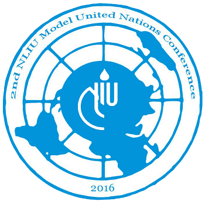

About Us
About NLIU
National Law Institute University, Bhopal (NLIU) was established by Act No. 41 of 1997 of the Madhya Pradesh Legislature. NLIU is a member of the Association of Indian Universities. The college boasts of an extremely dedicated and experienced faculty and some of the brightest young minds of our country. The University has fostered and developed partnerships, both at the national and international level, to further the interests of students through endeavors such as exchange programs with universities all over the world. NLIU seeks to provide its students with an environment which is a healthy mix of fervour, idealism, experience and moderating values and to inculcate in them the knowledge, confidence and competence to become the able lawyers of tomorrow.
About CRIL
The Centre for Research in International Law (CRIL) is a student run body at National Law Institute University, which was established with an aim to increase awareness of international law and policy among students. It seeks to ensure an active and inclusive atmosphere, in collaboration with various esteemed organizations wherein an interface between like-minded students and the extensive area of international law is created. CRIL is now the official Bhopal Chapter of the International Law Students Association (ILSA) and was awarded the ILSA Best Academic International Event Award in 2011. Since its inception, CRIL has, in its endeavors to promote this field of law, organized several lectures, panel discussions and conferences. These interactions have seen several people of eminence in the field come and interact with the students to discuss the prevalent international policies, controversies and world scenarios as they exist- providing a platform for international exposure. The 2nd Edition of the NLIUMUN is another endeavor in this direction.
About NLIUMUN
We, the Centre for Research in International Law (CRIL) at National Law Institute University, Bhopal, are proud to present to you the 2nd edition of the NLIU Model United Nations Conference to be held on 13th and 14th February 2016. The Model United Nations is a simulation of the working of the various committees of the United Nations with each participant representing a country. These participants, known as delegates, engage in diplomatic negotiations to reach a consensus on contemporary issues of international relevance. An MUN strikes the right balance between the procedural and pragmatic aspects of International Law. It provides students with a first-hand perspective of the formulation of International Law. In light of the growing relevance of international law and diplomacy, CRIL as the official Bhopal Chapter of International Law Students’ Association (ILSA), believes it to be an opportune time to host its first national level MUN Conference, in collaboration with the UN Information Centre for India and Bhutan (UNIC). The knowledge partners for our MUN are The Dais, which is an organisation led by experts of this activity. Thus, the NLIUMUN strives to be one of the most authentic Model UN Conferences of the country.
